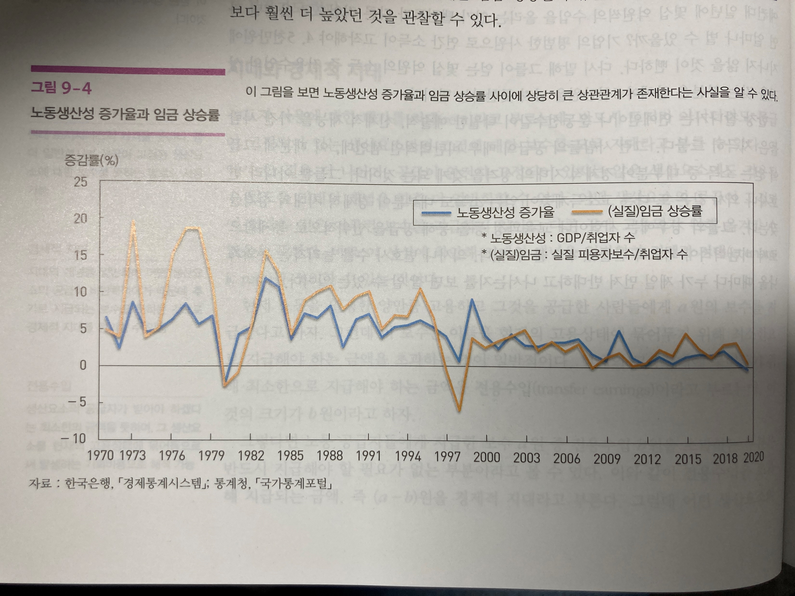

5강. 생산요소시장과 소득분배
생산요소시장의 특징
- 생산요소의 수요는 상품수요의 파생수요(derived demand)
- 가계: 공급자, 기업: 수요자
- 생산요소의 가격이 소득분배와 밀접하게 연관
생산요소에 대한 수요의 결정과정
가정: 완전경쟁시장에서 기업은 이윤극대화를 목표
아이스크림 가격: 2만원
| 노동투입량 | 노동의 한계생산 | 노동의 한계생산가치 |
|---|---|---|
| 1 | 5 | 10 |
| 2 | 7 | 14 |
| 3 | 8 | 16 |
| 4 | 7 | 14 |
| 5 | 5 | 10 |
| 6 | 3 | 6 |
| 7 | 1 | 2 |
| 8 | 0 | 0 |
노동투입을 5단위에서 6단위로 1단위 늘릴 때
생산량의 증가 = 노동의 한계생산 = 3단위
노동 1단위 고용에 따른 추가수입 = 3 × 2 = 6만원
= 노동의 한계생산가치
기업의 6번째 단위 노동의 추가고용 조건
→ 6번째 노동의 한계생산가치 ≥ 임금수준
생산요소에 대한 수요의 결정과정
가정: 완전경쟁시장에서 기업은 이윤극대화를 목표
노동과 자본의 한계생산가치 (value of marginal product)
$VMP_L = MP_L \times P, \qquad VMP_K = MP_K \times P$
〈기업 이윤극대화를 위한 비용극소화 조건〉
$\dfrac{MP_L}{w} = \dfrac{MP_K}{v}$
〈기업 이윤극대화 조건〉
$VMP_L = w, \qquad VMP_K = v$
생산요소에 대한 수요의 결정과정
가정: 완전경쟁시장에서 기업은 이윤극대화를 목표
노동의 한계생산가치곡선(VMPL)
= 노동의 수요곡선
노동수요곡선의 우하향
: 한계생산체감(수확체감)의 법칙 적용
생산요소에 대한 (노동)공급의 결정과정
가정: 완전경쟁시장에서 가계는 효용극대화를 목표
→ 가용시간 = 노동시간 + 여가시간
U = f(노동, 여가)
상품가격변화에 따른 수요량 변화
= 대체효과 + 소득효과의 결과
노동공급의 대체효과
임금 ↑ → 여가의 기회비용 ↑
노동공급의 소득효과
임금 ↑ → 정상재인 여가의 소비 ↑
생산요소에 대한 공급의 결정과정
Q) 다른 생산요소인 자본과 토지의 공급곡선은 어떻게 나타날까?
생산요소시장의 균형
1) 상품시장
2) 노동시장
생산요소시장의 균형: 시장수요의 변화
1) 상품시장
2) 노동시장
임금격차의 존재 이유
- 인적투자: 생산성의 차이
- 보상격차: 쾌적성이나 위험의 정도에 대한 추가보수
우리나라의 노동시장
노동생산성증가율과 임금상승률 사이에 상당한 상관관계가 존재

지대와 경제적 지대
지대(rent): 토지서비스의 가격, 공급이 고정된 생산요소에 대한 보수
경제적 지대(economic rent): 어떤 생산요소의 공급이 비탄력적이기에 받는 보수로서 일반화된 지대개념
전용수입(transfer earnings): 생산요소 공급자가 받기 원하는 최소금액, 현재 생산상태에 묶어 두기 위한 비용
자본과 자본축적
자본(capital)
생산과정에 사용되는 건물, 기계, 도구, 재고 등
자본축적
자본재(capital goods)를 생산하여 그 양을 늘려가는 것 → 미래 더 큰 소비를 위해 현재소비를 줄이는 행위
자본스톡(capital stock)
한 나라에 존재하는 자본재의 총량
- 구조물: 공장, 집, 다리 등
- 설비: 기계, 공구 등 생산과정에서 활용가능한 물건
- 재고: 투입물이나 산출물의 일부
감가상각(depreciation)
시간이 지남에 따라 자본재의 가치가 떨어지는 것 (수명, 기술한계 등)
투자의 결정기준: 할인과 현재가치
기업의 투자
자본재를 구입해 생산과정에 투입하는 행위
기업투자의 결정기준
미래 수익의 현재 가치 〉 자본재 투입비용
현재가치(present value)
미래에 발생할 수익이나 비용을 현재의 시점에서 평가한 가치
할인(discounting)
미래의 금액을 현재가치로 환산하는 기준이 되는 비율
투자의 결정기준: 할인과 현재가치
현재가치(present value): 미래 현금흐름의 현 시점에서의 가치
은행 이자율이 연 10%라고 할 때 100만원을 은행에 예금한다면?
- 현재 – 100만원
- 1년 후의 가치 – 100만원 × (1.1) = 110만원
- 2년 후의 가치 – 100만원 × (1.1) × (1.1) = 121만원
- 3년 후의 가치 – 100만원 × (1.1) × (1.1) × (1.1) = 133만원
→ 3년 후에 133만원을 받기로 했다면 133만원의 현재가치는?
(133만원) / (1.1³) = 100만원
N시점의 현금흐름
$V_0 = \dfrac{V_n}{(1+r)^n}$
Vn의 현재가치 / r: 할인율(Discount Rate)
투자의 결정기준: 할인과 현재가치
Q) 가격 10억원인 기계가 있고 연간할인율이 10%일 때
아래와 같은 현금흐름에서 투자하는 것이 옳을까?
- 1년 후: 2억원
- 2년 후: 3억원
- 3년 후: 3억원
- 4년 후: 3억원
- 5년 후: 2억원
수익의 현재가치는 9.84억
이자율의 결정
이자율(interest rate): 자금을 빌리는 것에 대한 가격
소득분배
기능별 소득분배(functional distribution of income)
경제 전체의 소득이 각 생산요소 사이에서 어떻게 나누어지는지에 주목
→ 국민소득의 임금, 이자, 이윤, 지대에 돌아가는 몫
계층별 소득분배(size distribution of income)
소득이 가장 큰사람부터 차례로 배열했을 때 각 소득계층에 돌아가는 몫에 주목
→ 상위 10%, 하위 10%의 소득
우리나라 소득분배
우리나라 도시가계의 소득 10분위별 점유비율 (2019년)(%)
| 소득분위 | 소득점유율 | 누적비율 |
|---|---|---|
| 1분위 | 2.1 | 2.1 |
| 2분위 | 4.3 | 6.4 |
| 3분위 | 5.8 | 12.3 |
| 4분위 | 7.1 | 19.4 |
| 5분위 | 8.3 | 27.8 |
| 6분위 | 9.7 | 37.5 |
| 7분위 | 11.2 | 48.7 |
| 8분위 | 12.8 | 61.5 |
| 9분위 | 15.5 | 77.0 |
| 10분위 | 23.0 | 100.0 |
십분위분배율
하위 40% 소득 비율 / 상위 20%의 소득 비율
불평등도의 측정: 로렌츠곡선
불평등지수
현실의 분배상태가 균등한 분배상태에서 얼마나 멀리 떨어져 있는지를 나타내기 위한 지표
로렌츠곡선(Lorenz curve)
가장 가난한 몇 퍼센트의 사람들이 전체 소득 중 몇 퍼센트를 차지하고 있는지를 나타내는 점들을 이어 만든 직선
→ 대각선에 가까울수록 소득이 평등하게 분배
— 소득이 낮은 순서대로 나열 →
불평등도의 측정: 지니계수
로렌츠곡선(Lorenz curve)의 한계: 두 로렌츠 곡선이 서로 교차할 경우 분배상태 비교 불가
지니계수(Gini index) (0: 완전평등, 1: 완전불평등)
$G = \dfrac{\alpha}{\alpha + \beta}$
우리나라 지니계수 변동추이
자료: 통계청, 2021
주: 2016년부터는 가계금융복지조사 결과를 이용하여 최근 OECD 작성기준(wave7)에 따라 작성
Q & A
권규상 Kyusang Kwon
(kyusang.kwon@chungbuk.ac.kr)